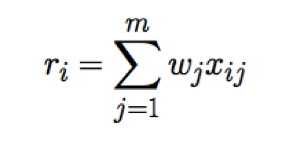
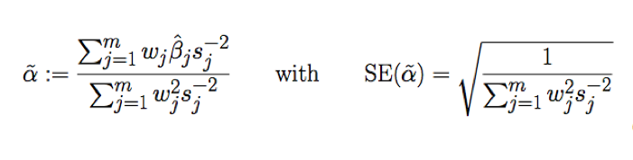
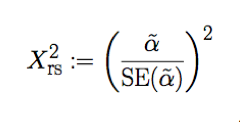

The National Human Genome Research Center’s (NHGRI) GWAS Catalog is a regularly updated compilation of data from GWAS publications with 508 traits and over 15,000 lines of SN -Trait associations as of December 2013. The NHGRI catalog was used as our starting resource for the creation of instrumental variable trait files for MR analysis. First, the latest NHGRI GWAS catalog is pulled from the website (http://www.genome.gov/admin/gwascatalog.txt) as a tab-separated file. After general formatting changes, all SNP-trait associations that are genome-wide significant (p<5x10E-8) are binned by trait name into individual trait files with each line containing a SNP rs ID, log of Odds Ratio (Beta) of SNP on Trait, 95% Confidence Interval of Effect, Effect Allele, p-value and supplementary identifying information.
Unfortunately, the current state of the NHGRI catalog lacks the non-risk allele, a necessary piece of information for aligning direction of association when calculating MR score with a disease endpoint. In addition, the beta effect values listed for each SNP are all positive values, with information about their true positive or negative numerical effect in a separate column. The update() function references a large SNP file based on 1000 genomes data for allele information to add the non-risk allele and updates the sign of beta value according to given unit syntax (increase/decrease, taller/shorter, etc).
In order to satisfy conditions of MR analysis, we must ensure that each of the genetic variants is independent of confounding factors of disease or trait of interest. In addition, we make sure that no two variants are in linkage disequilibrium, a measure of non-random association of two alleles, which would cause a disproportionately weighed causal effect on disease and violate random assortment assumption of MR. We address these in a two-step filtering method on the SNPs in our IV files.
Genetic variant SNPs are grouped by LD association with r^2 Threshold of 0.05, making clusters of SNPs that have LD association with each other such that any two SNPs in a cluster can connect through drawing LD associations of r^2> 0.05. The SNP with lowest p-value of trait association among each cluster is labeled the lead SNP. Each lead SNP is then scanned for presence of SNPs with associations with confounding traits in the NHGRI GWAS catalog. Excluded in this scan are associations with disease endpoints and traits that are similar/closely related to trait of focus. Lead SNPs with any associations are tossed out, and the remaining lead SNPs are passed on.
To ensure thorough purging of confounded genetic variants, we filter the remaining SNPs using a metabolic p-value association file containing > 2.0x10^6 SNPs and p-value associations with 15 metabolic-related traits, including LDL, HDL, fasting glucose levels, blood pressure- common confounders of diseases including CVD and T2D. If the trait of interest is in fact one of the 15 metabolic traits, those associations are ignored by a helper file (see tutorial). The algorithm used removes any SNP with an association to a metabolic trait with p<0.001. If a SNP has 4 or more associations with p<0.05, it is also removed. Lastly, SNPs are grouped by the number of p<0.05 associations (between 0 and 3). If the total number of p<0.05 violations exceeds that expected from chance (5% of total SNPs * 15 associations per/SNP) then SNPs are iteratively removed based on total p<0.05 violations, beginning with SNPs that have 3. This ensures that our final IV files does not contain more significant metabolic associations than we would expect by chance (p=0.05). SNPs that remain compose the score of genetic variants that make up the trait instrumental variable file for MR analysis.
The original application of MR begins with individuals who are genotyped at a range of SNPs associated with a trait of interest and utilizes a multi-SNP risk score as an instrument to estimate causal effect of trait with an endpoint hazard (Sheehan 2008). In the large GWAS data sets of SNP-trait and SNP-disease associations, we have summaries of trait and endpoint effects rather than individual genotypes. The analysis used in the calculation of the effect estimate in our pipeline is a variation of original, individual genotype MR analysis for summary SNP results from meta-analysis association results. The statistical method was drawn from Toby Johnson’s “Efficient Calculation for Calculating Multi-SNP Genetic Risk Scores.”(Johnson 2012). I report the shorthand version along with the assumptions and the way various statistics the pipeline produces are calculated.
First an additive multi-SNP risk score is calculated. For m chosen SNPs, the risk score for i-th subject is:
Here, xij is the dose of allele at j-th SNP in the i-th. The value wj refers to the weight of the j-th SNP, and in our case this is analogous to the effect-size of SNP-trait association. Our goal is the determine the association between this risk score and a disease phenotype using a linear regression model where the likelihood of disease phenotype depends solely on trait risk score through a single coefficient, α. (Johnson 2012).
We look for an estimate for α, which will be our effect estimate of the trait-disease endpoint association. Johnson defines a formula for such an estimate as well as the standard error on the estimate:
Here, wj is the effect size of j-th SNP (in our case ln(OR) of the SNP in our trait file), βj is the effect size estimate of j-th SNP with disease phenotype, and sj is the corresponding standard error on βj.
These, in addition to the standard MR assumptions satisfied through preparation of IV through filtering lead to a reliable estimate of the causal effect. With α and SE(α) , we calculate chi-square on result with:
We do this by using the fact that our test statistic is a Wald association test and is chi-square distributed with 1 degree of freedom. From this we calculate p-value using the chi-squared distribution.
We also calculate the OR of Effect = e^alpha, and the lower and upper 95% Confidence Interval bounds on alpha (CI) = alpha +/- 1.96xSE(alpha).